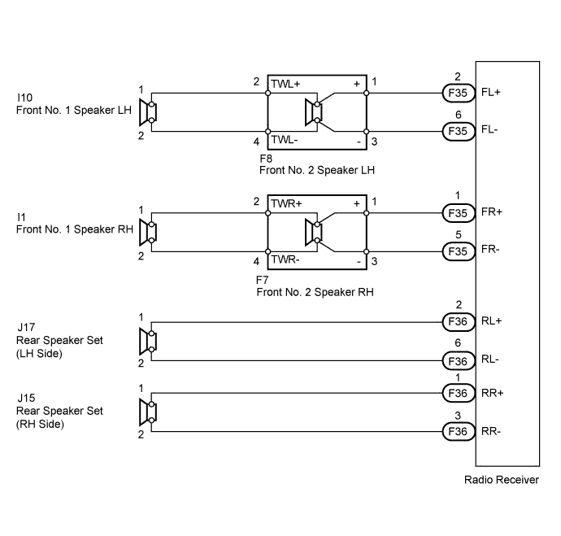
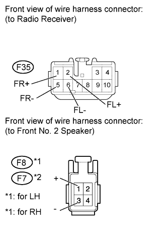
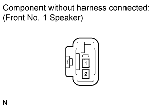
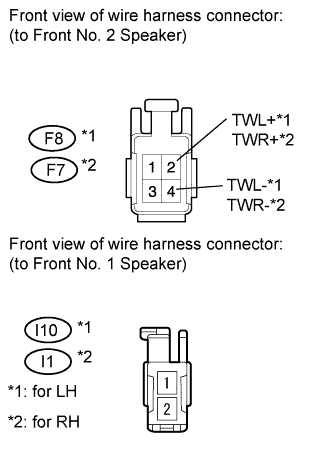
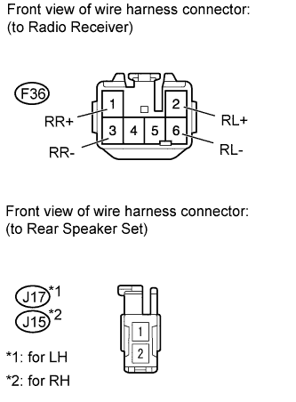

AUDIO AND VISUAL SYSTEM (w/o Multi-display) > Speaker Circuit (Built-in Amplifier) |

| 1.CHECK SPEAKER |
Check the malfunctioning speakers.
| Result | Proceed to |
| Malfunction in front speaker area | A |
| Malfunction in rear speaker area | B |
|
| ||||
| A | |
| 2.CHECK SPEAKER |
Check the malfunctioning speakers.
| Result | Proceed to |
| Front No. 2 speaker | A |
| Front No. 1 speaker | B |
|
| ||||
| A | |
| 3.INSPECT FRONT NO. 2 SPEAKER ASSEMBLY |
 |
Disconnect the F8 and F7 speaker connectors.
Measure the resistance according to the value(s) in the table below.
| Tester Connection | Condition | Specified Condition |
| 1 - 2 | Always | Below 1 Ω |
| 3 - 4 | Always | Below 1 Ω |
| 2 - 4 | Always | 8 Ω |
|
| ||||
| OK | |
| 4.CHECK HARNESS AND CONNECTOR (RADIO RECEIVER - FRONT NO. 2 SPEAKER) |
 |
Disconnect the F35 receiver connector.
Disconnect the F8 and F7 speaker connectors.
Measure the resistance according to the value(s) in the table below.
| Tester Connection | Condition | Specified Condition |
| F35-2 (FL+) - F8-1 (+) | Always | Below 1 Ω |
| F35-6 (FL-) - F8-3 (-) | ||
| F35-2 (FL+) - Body ground | Always | 10 kΩ or higher |
| F35-6 (FL-) - Body ground |
| Tester Connection | Condition | Specified Condition |
| F35-1 (FR+) - F7-1 (+) | Always | Below 1 Ω |
| F35-5 (FR-) - F7-3 (-) | ||
| F35-1 (FR+) - Body ground | Always | 10 kΩ or higher |
| F35-5 (FR-) - Body ground |
|
| ||||
| OK | ||
| ||
| 5.INSPECT FRONT NO. 1 SPEAKER ASSEMBLY |
 |
Disconnect the I10 and I1 speaker connectors.
Measure the resistance according to the value(s) in the table below.
| Tester Connection | Condition | Specified Condition |
| 1 - 2 | Always | 4 Ω |
|
| ||||
| OK | |
| 6.CHECK HARNESS AND CONNECTOR (FRONT NO. 2 SPEAKER - FRONT NO. 1 SPEAKER) |
 |
Disconnect the I10, I1, F8 and F7 speaker connectors.
Measure the resistance according to the value(s) in the table below.
| Tester Connection | Condition | Specified Condition |
| F8-2 (TWL+) - I10-1 | Always | Below 1 Ω |
| F8-4 (TWL-) - I10-2 | ||
| F8-2 (TWL+) - Body ground | Always | 10 kΩ or higher |
| F8-4 (TWL-) - Body ground |
| Tester Connection | Condition | Specified Condition |
| F7-2 (TWR+) - I1-1 | Always | Below 1 Ω |
| F7-4 (TWR-) - I1-2 | ||
| F7-2 (TWR+) - Body ground | Always | 10 kΩ or higher |
| F7-4 (TWR-) - Body ground |
|
| ||||
| OK | ||
| ||
| 7.INSPECT REAR SPEAKER SET |
 |
Disconnect the J17 and J15 speaker connectors.
Measure the resistance according to the value(s) in the table below.
| Tester Connection | Condition | Specified Condition |
| 1 - 2 | Always | 4 Ω |
|
| ||||
| OK | |
| 8.CHECK HARNESS AND CONNECTOR (RADIO RECEIVER - REAR SPEAKER SET) |
 |
Disconnect the F36 receiver connector.
Disconnect the J17 and J15 speaker connectors.
Measure the resistance according to the value(s) in the table below.
| Tester Connection | Condition | Specified Condition |
| F36-2 (RL+) - J17-1 | Always | Below 1 Ω |
| F36-6 (RL-) - F17-2 | ||
| F36-2 (RL+) - Body ground | Always | 10 kΩ or higher |
| F36-6 (RL-) - Body ground |
| Tester Connection | Condition | Specified Condition |
| F36-1 (RR+) - J15-1 | Always | Below 1 Ω |
| F36-3 (RR-) - J15-2 | ||
| F36-1 (RR+) - Body ground | Always | 10 kΩ or higher |
| F36-3 (RR-) - Body ground |
|
| ||||
| OK | ||
| ||